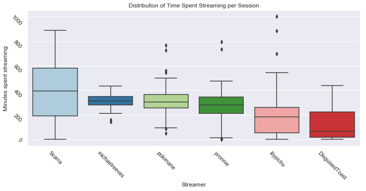
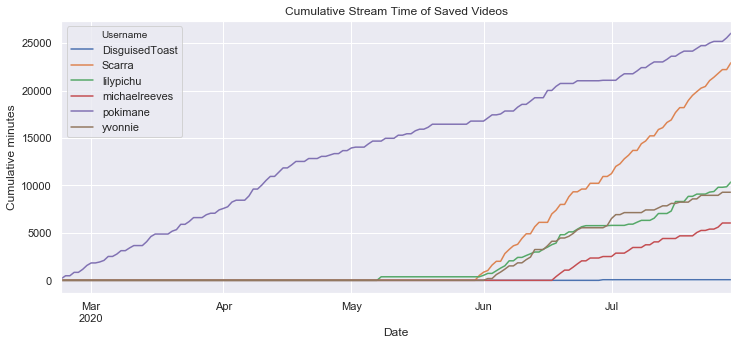

Twitch Analysis
An ongoing analysis of the Twitch streaming platform using the Twitch API
Twitch Analysis
Twitch.tv has gained massive popularity in recent years and is currently the world’s leading video live streaming service. The site primarily focuses on video game live streaming and broadcasts of esports competitions, but is also home to music broadcasts, creative content, and more recently, “in real life” streams.
This project is an ongoing analysis of Twitch data utilizing Python in an effort to understand the trends and habits of popular streamers. As new mediums of entertainment (such as streaming) emerge, the opportunity to explore the stories and insights that are hidding within the data from these platforms come with it.
Setup
In this and future analyses, I will be utilizing the Twitch API to collect data.
# Install packages
import config
import requests
import json
import pandas as pd
import numpy as np
import seaborn as sns
import matplotlib.pyplot as plt
import datetime
sns.set(style="darkgrid")
# Set keys and links
OAUTH = config.OAUTH
CLIENT_ID = config.CLIENT_ID
CLIENT_SECRET = config.CLIENT_SECRET
BASE_URL = {"v5":"https://api.twitch.tv/kraken/",
"new":"https://api.twitch.tv/helix/"}
HEADERS = {"Authorization":"Bearer {}".format(OAUTH),
"client-id":CLIENT_ID}
# Get response from API call
def get_response(query, params = {}, version = "new"):
response = requests.get(BASE_URL[version] + query,
headers = HEADERS,
params = params)
return response
# Get user info
# https://dev.twitch.tv/docs/api/reference#get-users
def get_query_user_info(login):
return "users?login={}".format(login)
# Get video info
# https://dev.twitch.tv/docs/api/reference#get-videos
def get_query_video_info(user_id):
return "videos?user_id={}".format(user_id)
Collect streamer information
For this analysis, I will be taking a look at a group of streamers and online content creators called OfflineTV. These individuals happen to be the streamers I follow the most, so I wanted to take a look at what the data can tell me about their streaming habits.
# List OTV members
otv_members = ["scarra","pokimane","lilypichu","disguisedtoast","yvonnie","michaelreeves"]
# Get otv member info
otv_member_info = pd.DataFrame()
for member in otv_members:
member_json = get_response(get_query_user_info(member)).json()['data']
member_df = pd.json_normalize(member_json)
otv_member_info = otv_member_info.append(member_df)
otv_member_info
| id | login | display_name | broadcaster_type | description | profile_image_url | offline_image_url | view_count |
|---|---|---|---|---|---|---|---|
| 22253819 | scarra | Scarra | partner | I’m an ex league of legends pro mid laner turn… | https://static-cdn… | https://static-cdn… | 92497991 |
| 44445592 | pokimane | pokimane | partner | Welcome to my channel! :) I play Fortnite, Lea… | https://static-cdn… | https://static-cdn… | 119593646 |
| 31106024 | lilypichu | lilypichu | partner | Hi everyone! Make sure to read the rules. o/ | https://static-cdn… | https://static-cdn… | 34381106 |
| 87204022 | disguisedtoast | DisguisedToast | Join this toast on a magical journey ride thro… | https://static-cdn… | https://static-cdn.. | 72444943 | |
| 45184940 | yvonnie | yvonnie | partner | Hi, my name is Yvonne and I like to play games | https://static-cdn… | https://static-cdn… | 3330408 |
| 469790580 | michaelreeves | michaelreeves | partner | gamers gaming | https://static-cdn… | 2047210 |
Out of the 6 current members, we can see that 5 of them are “partner”s, which means that they earn revenue from streaming and gain access to other special Twitch features. The one member of the group who is not partnered is Disguised Toast, who signed a contract to stream on Facebook Gaming in November of 2019.
Distribution of time spent streaming
After setting up the API and collecting basic information on the members of OfflineTV, I could now pull more specific data. I wanted to look at how long these streamers were streaming during each of their live sessions so I pulled data on their VODs — an archive of previously streamed content. Due to the limitations of the VOD storage system and the API, this current iteration of my analysis limited me to the 100 most recent pieces of video content from each member.
# Get otv video data
otv_videos = pd.DataFrame()
for id in otv_member_info.id:
videos_json = get_response(get_query_video_info(id), params = {"first":"100"}).json()['data']
videos_df = pd.json_normalize(videos_json)
otv_videos = otv_videos.append(videos_df)
# Clean created_at date
otv_videos["created_at"] = pd.to_datetime(otv_videos["created_at"]).dt.normalize().dt.date
# Calculate total minutes streamed per video
otv_videos["hours"] = otv_videos["duration"].str.extract("(\d*)(?=[h])").fillna(0).astype(float)
otv_videos["minutes"] = otv_videos["duration"].str.extract("(\d*)(?=[m])").fillna(0).astype(float)
otv_videos["seconds"] = otv_videos["duration"].str.extract("(\d*)(?=[s])").fillna(0).astype(float)
otv_videos["total_minutes"] = otv_videos["hours"]*60 + otv_videos["minutes"] + otv_videos["seconds"]/60
# Calculate total minutes streamed per day
otv_videos_sum = otv_videos.groupby(["user_name","created_at"]).sum().reset_index()
# Sort index by mean
sorted_index = otv_videos_sum.groupby("user_name")["total_minutes"].median().sort_values(ascending=False).index
# Plot boxplot
plt.subplots(figsize=(12, 5))
ax = sns.boxplot(data = otv_videos_sum,
x = "user_name",
y = "total_minutes",
order = sorted_index,
palette = sns.color_palette("Paired"))
ax.tick_params(rotation=-45)
plt.title("Distribution of Time Spent Streaming per Session")
plt.xlabel("Streamer")
plt.ylabel("Minutes spent streaming")

We can see that, on average, Scarra streams the most with roughly half of his streams lasting from around 200 to 600 minutes (3.3-10 hours). Michael Reeves, Pokimane, and Yvonnie all seem to stream for roughly the same amount of time, that is somewhere between 200 and 400 minutes (3.3-6.6 hours). Finally, we have LilyPichu and Disguised Toast, who both average below 4.3 hours.
Cumulative time spent streaming
The next things I wanted to look at was their streaming trends over time. Members like Scarra and Pokimane are known to have consistant streaming schedules and members like LilyPichu have historically been more inconsistant. However, habits do change, and so I wanted to see how this bunch compared to one another in recent months.
The API and VOD limits mentioned above led me to the decision to only take data since the end of February. I calculated each member’s cummulative number of minutes spent streaming since February 23rd, 2020 in order to compare them.
# Filter date range
min_date = otv_videos_sum[otv_videos_sum["user_name"] == "pokimane"]["created_at"].min()
max_date = otv_videos_sum[otv_videos_sum["user_name"] == "pokimane"]["created_at"].max()
date_range = pd.date_range(min_date, max_date, freq = "D")
otv_videos_filtered = otv_videos_sum[otv_videos_sum["created_at"] >= min_date]
# Fill missing dates
otv_videos_filled = (otv_videos_filtered.set_index("created_at")
.groupby("user_name")
.apply(lambda x: x.reindex(date_range))
.drop("user_name", axis = 1)
.reset_index()
.rename(columns = {"level_1":"created_at"})
.fillna(0))
# Calculate cumulative sum of minutes streamed for each otv member
otv_videos_filled["total_minutes_cumsum"] = otv_videos_filled.groupby("user_name")["total_minutes"].cumsum()
# Pivot data for plotting
otv_videos_pivot = otv_videos_filled[["user_name","total_minutes_cumsum","created_at"]].pivot(index = "created_at",
columns = "user_name",
values = "total_minutes_cumsum")
# Plot cummulative minutes
fig = plt.figure()
otv_videos_pivot.plot(figsize=(12, 5))
plt.title("Cumulative Stream Time of Saved Videos")
plt.xlabel("Date")
plt.ylabel("Cumulative minutes")
plt.show()

I originally thought that Twitch’s 60 day past-broadcast VOD storage limit would have limited every member on their video data availability, but that doesn’t seem to be the case for Pokimane. This is something that I’d like to dive deeper in a future analysis, as I wonder if this surplus of extra data is related to the video content type.
Looking at the rest of the members, we see that Scarra has been streaming a whole lot in a short amount of time and that both LilyPichu and Yvonnie share similar stream time. Michael Reeves is right below them, which is understandable considering he only began streaming in mid-June. Finally, we see Disguised Toast at the bottom with almost zero stream time due to his Facebook Gaming contract’s limitations on streaming with other competing platforms such as Twitch.
Future analysis
Status: Work in progress
Share this post
Twitter
Facebook
Reddit
LinkedIn
Email